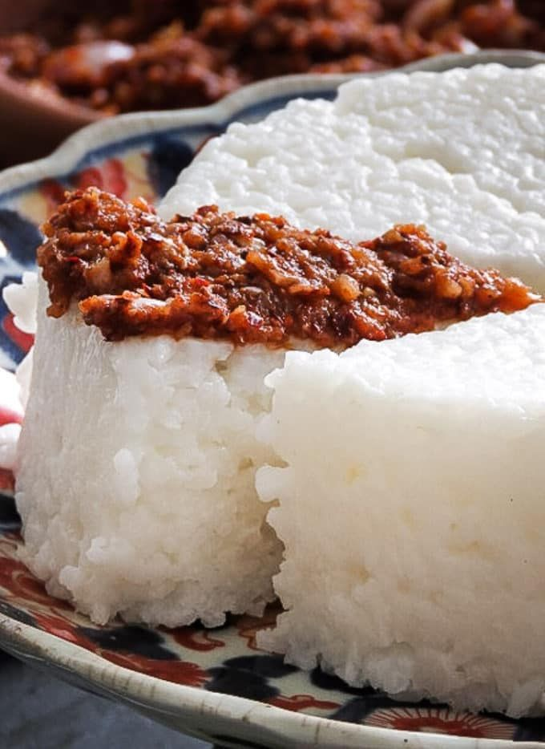
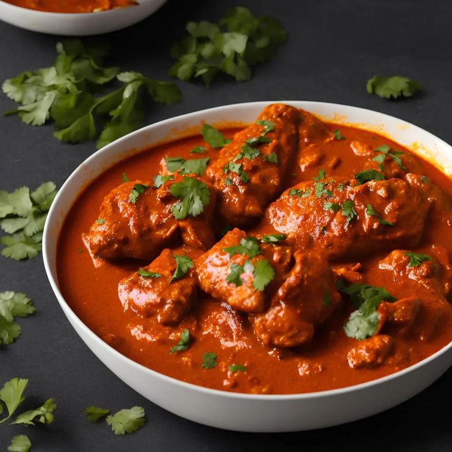
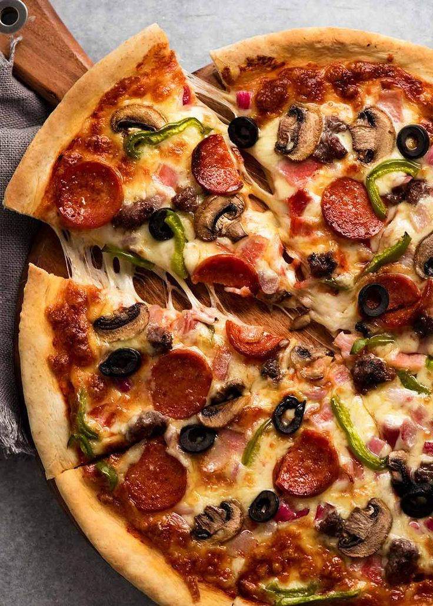
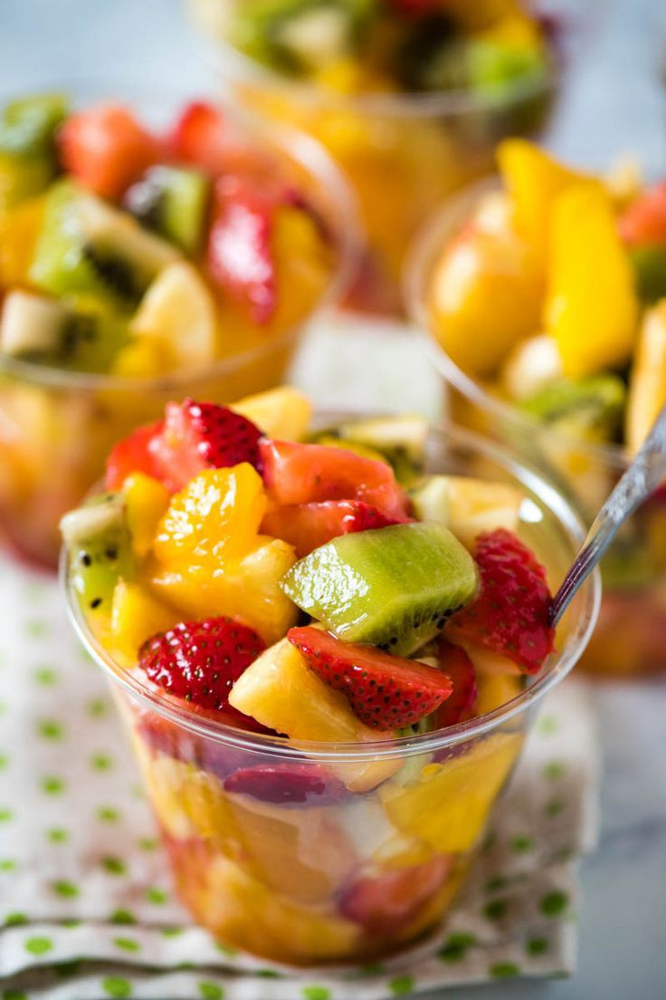

Delicious Recipes!
Kiribath with Lunu Miris Recipe

Ingredients:
- 2 cups rice
- 4 cups coconut milk
- Salt to taste
- For Lunu Miris (Sambal):
- 1 red onion, finely chopped
- 2-3 green chilies, finely chopped
- 1-2 cloves garlic, minced
- 1 sprig curry leaves
- Salt to taste
- 1-2 tablespoons lime juice
Instructions:
- Wash rice and cook with coconut milk until creamy.
- Add salt to taste and continue to cook until the rice is well-cooked and has a creamy consistency.
- Spread the cooked rice on a flat surface and allow it to cool and set. Traditionally, it is shaped into a square or rectangle.
- For Lunu Miris (Sambal): In a bowl, mix together chopped red onion, green chilies, minced garlic, curry leaves, salt, and lime juice. Adjust the quantities according to your taste preferences.
- Serve the Kiribath slices with Lunu Miris on the side. Enjoy your delicious Sri Lankan Kiribath with Lunu Miris!
Indian Chicken Curry Recipe

Ingredients:
- 1 kg chicken, cut into pieces
- 2 onions, finely chopped
- 3 tomatoes, pureed
- 1/4 cup vegetable oil
- 1/2 cup plain yoghurt
- 2 tablespoons ginger-garlic paste
- 1 teaspoon cumin powder
- 1 teaspoon coriander powder
- 1/2 teaspoon turmeric powder
- 1 teaspoon red chili powder (adjust to taste)
- 1/2 teaspoon garam masala
- Salt to taste
- Fresh cilantro leaves for garnish
Instructions:
- In a large pan, heat vegetable oil over medium heat.
- Add chopped onions and sauté until golden brown.
- Add ginger-garlic paste and sauté for a minute until the raw smell disappears.
- Add chicken pieces and brown them on all sides.
- Stir in cumin powder, coriander powder, turmeric powder, red chili powder, and salt. Mix well.
- Add tomato puree and cook until the oil starts to separate from the masala.
- Whisk yogurt and add it to the curry. Cook until the chicken is tender and the curry has thickened.
- Sprinkle garam masala and garnish with fresh cilantro leaves.
- Serve hot with rice or Indian bread (roti, naan).
Pizza Recipe

Ingredients:
- 1 pizza dough (store-bought or homemade)
- 1 cup pizza sauce
- 1 cup shredded mozzarella cheese
- Assorted toppings (e.g., pepperoni, mushrooms, bell peppers, olives)
- 1 tablespoon olive oil
- Fresh basil leaves for garnish
- Salt and pepper to taste
Instructions:
- Preheat your oven to the temperature recommended for the pizza dough.
- Roll out the pizza dough on a floured surface to your desired thickness.
- Transfer the rolled-out dough to a pizza stone or baking sheet.
- Spread pizza sauce evenly over the dough, leaving a small border around the edges.
- Sprinkle shredded mozzarella cheese over the sauce, and add your preferred toppings.
- Drizzle olive oil over the top and season with salt and pepper to taste.
- Bake in the preheated oven according to the pizza dough instructions or until the crust is golden and the cheese is bubbly and slightly browned.
- Remove from the oven, garnish with fresh basil leaves, and let it cool for a few minutes before slicing.
- Serve hot and enjoy your homemade pizza!
Milkshake
Ingredients:
- 2 cups milk
- 1 cup vanilla ice cream
- 2 tablespoons chocolate syrup
- Whipped cream for topping (optional)
- Chocolate shavings for garnish (optional)
- Maraschino cherry for garnish (optional)
Instructions:
- In a blender, combine milk, vanilla ice cream, and chocolate syrup.
- Blend until smooth and creamy.
- Pour the milkshake into a glass.
- If desired, top with whipped cream and garnish with chocolate shavings and a maraschino cherry.
- Serve immediately and enjoy your delicious milkshake!
Fruit Salad Recipe

Ingredients:
- 2 cups strawberries, hulled and halved
- 2 bananas, sliced
- 1 cup grapes, halved
- 1 orange, peeled and segmented
- 1 tablespoon honey
- 1 tablespoon fresh mint leaves, chopped (optional)
Instructions:
- Wash and prepare all the fruits as needed.
- In a large bowl, combine strawberries, bananas, grapes, and orange segments.
- Drizzle honey over the fruits and gently toss to combine.
- Sprinkle fresh mint leaves on top for added freshness (optional).
- Chill in the refrigerator for at least 30 minutes before serving.
- Serve and enjoy your delicious and healthy fruit salad!